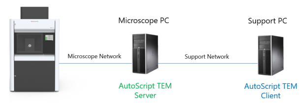
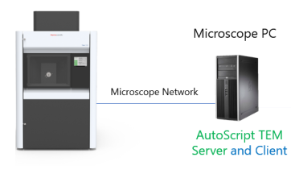
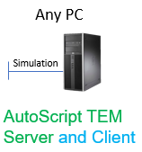
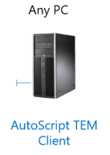

Two essential components of the AutoScript TEM product are the server and the client. The product installer provides the possibility to install these components in different configurations with respect to the typical network architecture of TEM systems. The specifics of each configuration are described below.
This is the preferred and most common installation configuration for systems with a standalone Support PC, which is connected to the Microscope PC via the Support network.

The AutoScript server component is installed on the Microscope PC and the client is installed on the Support PC along with the Python distribution and PyCharm Editor.
Python scripts are executed on the Support PC, passing the IP address of the Microscope PC to the connect() function on the TemMicroscopeClient object.
The advantage of this configuration is that the Python development environment does not interfere with the rest of the microscope software ecosystem on the Microscope PC.
In this configuration, all product components are installed on the Microscope PC and the Python scripts are executed from there.

The TemMicroscopeClient object must be connected to the locally running server with the hostname "localhost", as described in the user guide.
This is not a preferred configuration, it is often used as a workaround when the Support PC is not available on the TEM system.
In this configuration, all product components are installed on any (non-MPC) computer, such as a personal laptop, and the Offline product license is activated there. The offline environment provides a safe environment for development and debugging of scripts without any effects on the real system.
For more information about the offline mode, see the Offline mode page.

With this configuration, only the AutoScript TEM client is installed on an arbitrary PC and the server installation is skipped completely.

The client component alone gives you the opportunity to explore the capabilities and "feel" of AutoScript TEM at an elementary level without actually being able to run the scripts.
The Python editor will provide standard syntax checks and code completion hints for the API calls. Tools for managing the Python environment, all documentation and the database of code examples (AutoScript Snippets) will also be fully functional.
This configuration does not include any form of microscope simulation. No product license is required for this installation setup.